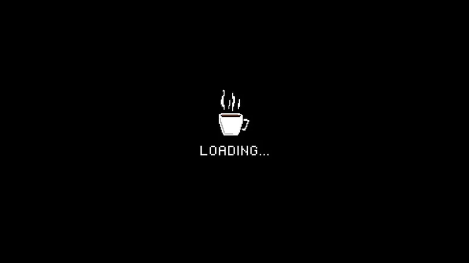
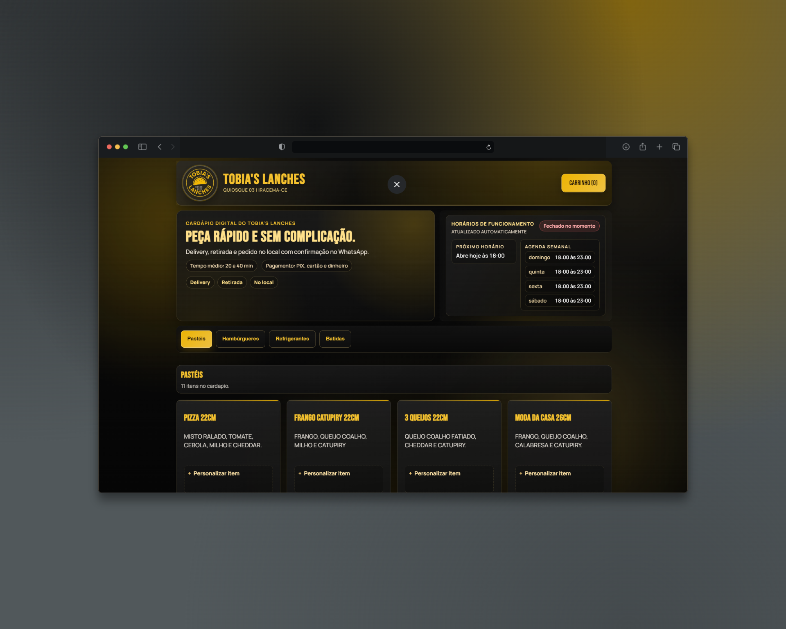

Desenvolvimento e arquitetura
Atuo da modelagem da interface ao desenho da estrutura técnica, com experiência em HTML, CSS, JavaScript, Node.js e integração entre frontend, regras de negócio e serviços externos.
Técnico em Desenvolvimento de Sistemas • Desenvolvedor Cloud
Olá! Meu nome é Kayron, tenho 18 anos e sou técnico em Desenvolvimento de Sistemas, Computação em Nuvem e Inteligência Artificial, formado pelo SENAI e pelo IFCE. Tenho conhecimentos em HTML, CSS, JavaScript, Node.js, MySQL, UX, webservices, AWS, segurança da informação, machine learning, automação em nuvem, design thinking e inglês moderado. Gosto de desenvolver aplicações web, estruturar interfaces, integrar serviços e organizar a base técnica dos projetos para que tudo funcione bem na prática, com clareza de uso, segurança e espaço para evoluir.
Atuo da modelagem da interface ao desenho da estrutura técnica, com experiência em HTML, CSS, JavaScript, Node.js e integração entre frontend, regras de negócio e serviços externos.
Trabalho com cenários que exigem webservices, bancos de dados, controle operacional e automação em nuvem, com atenção a estabilidade, manutenção e segurança da informação.
Uso princípios de Design Thinking e análise de dados para transformar requisitos em sistemas úteis, com responsividade, clareza de fluxo e foco no problema real do usuário.
Casos selecionados com foco em produto, implementação técnica e evolução de sistemas para uso real.

Evolução técnica do cardápio digital, com interface mais madura, painel Admin mais sólido e base preparada para operação online.
Reorganização da base do sistema para catálogo público, carrinho, checkout e gerenciamento administrativo em uma estrutura mais estável para manutenção e evolução.

Primeira base funcional do produto, criada para organizar pedidos por WhatsApp com uma experiência mais clara para catálogo, seleção e envio.
Construção da primeira versão do fluxo público de pedidos, com catálogo interativo, carrinho e handoff para WhatsApp sem depender de um app nativo.
Espaço reservado para o próximo projeto com publicação técnica, demonstração própria e documentação mais detalhada do processo de implementação.
O próximo card será usado para um novo case com escopo técnico fechado, publicação pública e recorte claro de arquitetura, operação e resultado.